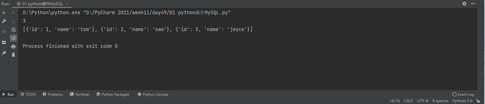

Python操作mysql
python操作MySQL
python第三方模块中支持操作MySQL的模块很多
其中pymysql使用频率较高
import pymysql
# 链接服务端
conn_obj = pymysql.connect(
host='127.0.0.1', # MySQL服务端的IP地址
port=3306, # MySQL默认PORT地址(端口号)
user='root', # 用户名
password='qwer9999', # 密码,也可以简写为passwd
database='pymysql_db', # 库名称,也可以简写为db
charset='utf8' # 字符编码
)
# 产生获取命令的游标对象
cursor = conn_obj.cursor() # 括号内不写参数,数据是元组套元组
# cursor = conn_obj.cursor(
# cursor=pymysql.cursors.DictCursor
# ) # 括号内写参数,数据会处理成字典形式
# sql1 = 'show tables;'
sql1 = 'select * from t1;' # SQL语句会被高亮显示
# 执行SQL语句
affect_rows = cursor.execute(sql1)
print(affect_rows) # 执行SQL语句之后受影响的行数
# 获取数据
# res = cursor.fetchall() # 获取所有数据
res = cursor.fetchone() # 获取一条数据
# res = cursor.fetchmany(2) # 获取指定个数数据
# cursor.scroll(1, 'relative') # 相对于当前位置往后移动一个单位
# res = cursor.fetchall() # 获取所有数据
# cursor.scroll(1, 'absolute') # 相对于起始位置往后移动一个单位
res1 = cursor.fetchall() # 获取所有数据
print(res, res1)

SQL注入问题
import pymysql
conn_obj = pymysql.connect(
host='127.0.0.1',
port=3306,
user='root',
password='qwer9999',
database='pymysql_db',
charset='utf8'
)
cursor = conn_obj.cursor(
cursor=pymysql.cursors.DictCursor
)
# 获取用户名和密码
name = input('请输入您的用户名>>>:').strip()
password = input('请输入您的登陆密码>>>:').strip()
# 拼接查询语句
sql = "select * from userinfo where name='%s' and password='%s';" % (name, password)
# sql = "select * from userinfo where name=%s and password=%s;"
# 执行SQL语句
cursor.execute(sql)
# cursor.execute(sql, (name, password))
res = cursor.fetchall()
if res:
print('登录成功')
else:
print('用户名或密码错误')
# 写正确的用户名错误的密码也可以登录
用户名:trump ' -- nullpassword
密码:直接回车
# 用户名和密码都不需要也可以登录
用户名:null ' or true -- nullpassword
密码:直接回车
# 上述现象就是典型的SQL注入问题
上述两种情况利用的是MySQL注释语法和逻辑运算符
# 解决SQL注入的问题只需过滤掉特殊符号
execute方法自带校验SQL注入问题，自动处理特殊符号
sql = "select * from userinfo where name=%s and password=%s;"
cursor.execute(sql, (name, password))
# execute方法补充
批量插入数据
sql = 'insert into userinfo(name,password) values(%s,%s)'
cursor.executemany(sql,[('trump',maga123),('biden',blv123)])
二次确认
数据的增删改查四个操作是有分级的
查 不会改变真正的数据，权限要求最低
增、改、删 都会影响真正的数据，权限要求较高
pymysql针对增、改、删三个操作设置了二次确认，如果不确认则不会真正修改数据库
import pymysql
conn_obj = pymysql.connect(
host='127.0.0.1',
port=3306,
user='root',
password='qwer9999',
database='pymysql_db',
charset='utf8',
autocommit=True # 自动二次确认
)
cursor = conn_obj.cursor(
cursor=pymysql.cursors.DictCursor
)
# sql = 'select * from userinfo' # 查数据
# sql = 'insert into userinfo(name,password) values("zoe","qqq")' # 增数据
# sql = 'insert into userinfo(name,password) values(%s,%s)' # 增数据
# sql = 'update userinfo set name="trump_donald" where name="trump"' # 改数据
sql = 'delete from userinfo where name="obama"' # 删数据
affect_row = cursor.execute(sql)
# affect_row = cursor.executemany(sql, [('jack', 'aaa'), ('rose', 'bbb'), ('peter', 'ccc')])
# conn_obj.commit() # 二次确认
print(affect_row)
print(cursor.fetchall())
# 方式1:代码直接编写
affect_row = cursor.execute(sql)
conn_obj.commit() # 手动二次确认
# 方式2:配置固定参数
conn_obj = pymysql.connect(
autocommit=True # 自动二次确认
)
修改表SQL语句补充
# 修改表的名字 rename
alter table t1 rename table1;
# 添加字段 add
alter table table1 add pwd varchar(42); # 默认是尾部追加字段
alter table table1 add sid int after name; # 指定追加位置
alter table table1 add eid int first; # 指定头部添加字段
# 修改字段1 change(名字类型都可)
alter table table1 change pwd password tinyint;
# 修改字段2 modify(只能改类型不能改名字)
alter table table1 change password password decimal;
# 删除字段 drop
alter table table1 drop eid;
视图、触发器、存储过程
视图
视图的概念
通过SQL语句的执行得到的一张虚拟表，保存的虚拟表就是'视图'
视图的作用
如果需要频繁的使用一张虚拟表，可以制作成视图，降低操作难度
视图的制作
语法结构：
create view 视图名 as sql语句
触发器
触发器概念
在对表数据进行增、删、改的具体操作下，自动触发的功能
触发器作用
专门针对表数据的操作，定制个性化配套功能
触发器种类
表数据新增之前、新增之后
表数据修改之前、修改之后
表数据删除之前、删除之后
触发器创建
create trigger 触发器名字 before/after insert/update/delete
on 表名 for each row
begin
SQL语句
end
具体案例
1.先创建两张表
CREATE TABLE cmd (
id INT PRIMARY KEY auto_increment,
USER CHAR (42),
priv CHAR (12),
cmd CHAR (64),
sub_time datetime, # 提交时间
success enum ('yes', 'no') # 0代表执行失败
);
CREATE TABLE error_log (
id INT PRIMARY KEY auto_increment,
err_cmd CHAR (64),
err_time datetime
);
2.需求:cmd表插入数据的success如果值为no 则去error_log表中插入一条记录
delimiter $$ # 将mysql默认的结束符由;换成$$
create trigger tri_after_insert_cmd after insert on cmd for each row
begin
if NEW.success = 'no' then # 新记录都会被MySQL封装成NEW对象
insert into error_log(err_cmd,err_time) values(NEW.cmd,NEW.sub_time);
end if;
end $$
delimiter ; # 将结束符改回
3.先往cmd表中插入数据
INSERT INTO cmd (
USER,
priv,
cmd,
sub_time,
success
)VALUES
('jeyce','0101','dir',NOW(),'yes'),
('harris','0202','cd d:\aaa\bbb',NOW(),'no'),
('pence','0303','del aaa.txt',NOW(),'no'),
('annie','0404','rm aaa',NOW(),'yes');
4.查看效果
select * from cmd;
select * from error_log;
5.触发器其他补充
查看当前库下所有的触发器信息
show triggers\G;
删除当前库下指定的触发器信息
drop trigger 触发器名称;
drop trigger tri_after_insert_cmd;
事务
事务的概念
事务可以包含诸多SQL语句并且这些SQL语句
要么同时执行成功，要么同时执行失败，这是事务的原子性特点
事务的作用
李某某需要给弟弟王某某转生活费
李某某拿银行卡去ATM机给王某某银行行卡转钱
1.朝交行的服务器发送请求，修改李某某账户余额(减钱)
2.朝建行的服务器发送请求，修改王某某账户余额(加钱)
事务的四大特性
简称：ACID
A:原子性
一个事务是一个不可分割的整体，里面的操作要么都成立要么都不成立
C:一致性
事务必须使数据库从一个一致性状态变到另外一个一致性状态
I:隔离性
并发编程中，多个事务之间是相互隔离的，不会彼此干扰
D:持久性
事务一旦提交，产生的结果应该是永久的和不可逆的
具体使用
存储过程
类似于python中的自定义函数
类似于定义函数
delimiter $$
create procedure proc()
begin
select * from cmd;
end $$
delimiter ;
相当于调用函数
call proc()
具体案例
delimiter $$
create procedure proc1(
in m int, # in表示这个参数必须只能是传入不能被返回出去
in n int,
out res int # out表示这个参数可以被返回出去，还有一个inout表示即可以传入也可以被返回出去
)
begin
select name,balance from userinfo where id > m and id < n;
set res=0; # 用来标志存储过程是否执行
end $$
delimiter ;
# 针对res需要先提前定义
set @res=8; 定义
select @res; 查看
call proc1(1,4,@res); 调用
select @res; 查看
# 查看存储过程具体信息
show create procedure proc1;
# 查看所有存储过程
show procedure status;
# 删除存储过程
drop procedure proc1;
函数
提示：可以通过help+函数名查看帮助信息
移除指定字符
Trim、LTrim、RTrim
select trim(leading'^' from name) from t1;
select trim(both'^' from name) from t1;
大小写转换
Lower、Upper
select lower(name) from t1;
select upper(name) from t1;
获取左右起始指定个数字符
Left、Right
select left(name,5) from t1;
返回读音相似值(对英文效果)
Soundex
select name from t1 where soundex(name)=soundex('petor');

日期格式:date_format
在MySQL中表示时间格式尽量采用2022-01-01形式
CREATE TABLE blog (
id INT PRIMARY KEY auto_increment,
NAME CHAR (32),
sub_time datetime
);
INSERT INTO blog (NAME, sub_time)
VALUES
('第1篇','2022-03-01 09:27:51'),
('第2篇','2022-03-11 14:40:30'),
('第3篇','2022-03-01 09:17:41'),
('第4篇','2017-04-21 14:10:30'),
('第5篇','2022-03-01 09:27:31'),
('第6篇','2018-04-11 14:20:30'),
('第7篇','2022-05-01 09:27:21'),
('第8篇','2019-03-31 14:40:30'),
('第9篇','2022-06-01 09:27:11'),
('第10篇','2019-03-21 14:40:30'),
('第11篇','2022-07-01 09:27:01'),
('第12篇','2018-03-01 14:40:30');
select date_format(sub_time,'%Y-%m'),count(id) from blog group by date_format(sub_time,'%Y-%m');
1.where Date(sub_time) = '2022-03-01'
select date_format(sub_time,'%Y-%m'),count(id) from blog where Date(sub_time) = '2022-03-01';
2.where Year(sub_time)=2019 AND Month(sub_time)=03;
select date_format(sub_time,'%Y-%m'),count(id) from blog where Year(sub_time)=2019 AND Month(sub_time)=03;
# 其它日期处理相关函数
adddate 增加一个日期
addtime 增加一个时间
datediff 计算两个日期差值
流程控制
# MySQL if判断
if 条件 then
子代码
elseif 条件 then
子代码
else
子代码
end if;
# MySQL while循环
DECLARE num INT ;
SET num = 0 ;
WHILE num < 10 DO
SELECT num ;
SET num = num + 1 ;
END WHILE ;
索引与慢查询优化
索引就是一种数据结构
类似于书的目录。意味着以后再查数据应该先找目录再找数据，而不是用翻页的方式查询数据
索引在MySQL中也叫做“键”，是存储引擎用于快速找到记录的一种数据结构
primary key 主键
unique key 唯一键
index key 索引键
前两种有额外的约束条件(primary key:非空且唯一，unique key:唯一)，而index key没有任何约束功能只会加速查询
索引的基本用法
id name pwd post_comment addr age
基于id查找数据很快，但是基于addr查找数据就很慢
解决的措施可以是给addr添加索引
索引的影响
- 在表中有大量数据的前提下，创建索引速度会很慢
- 在索引创建完毕后，对表的查询性能会大幅度提升，但是写的性能会降低

【推荐】腾讯自研业务上云，5000万核背后的技术难题破解之道
· 当 xxl-job 遇上 docker → 它晕了，我也乱了！
· Go map 竟然也会发生内存泄漏？
· .net 温故知新：.NET日志记录 ILogger使用和原理
· 一个超经典 WinForm 卡死问题的再反思
· 一个 MySQL 隐式转换的坑，差点把服务器整崩溃了
· Spring Boot框架下实现Excel服务端导入导出
· C#多线程之高级篇（上）
· 当 xxl-job 遇上 docker → 它晕了，我也乱了！
· 为啥不适合，依然有很多人大张旗鼓搞企业内部开源？（下）
· 记一次.NET某工控图片上传CPU爆高分析